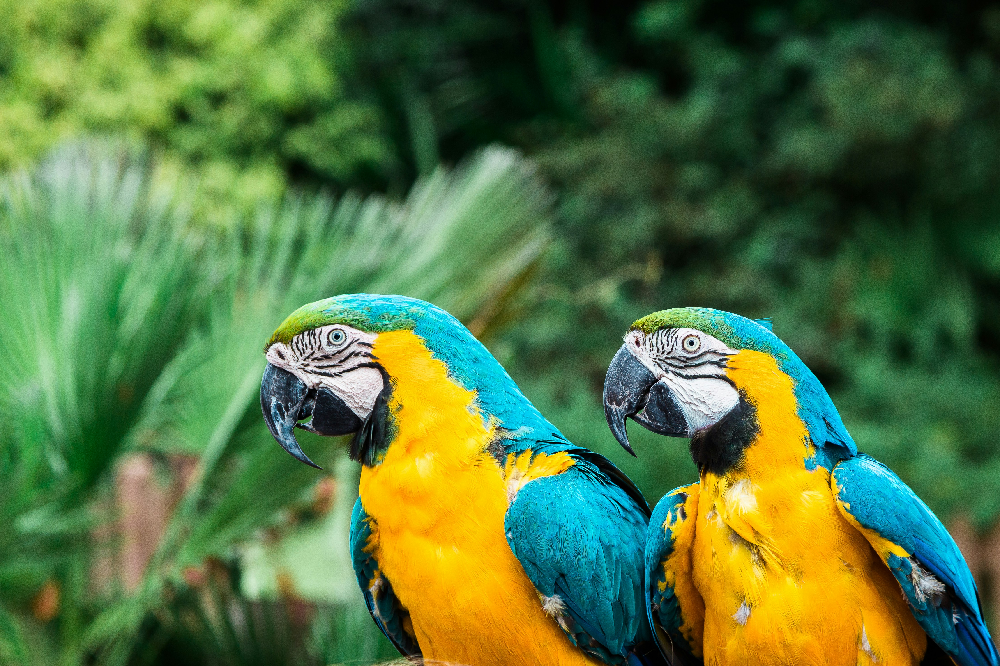
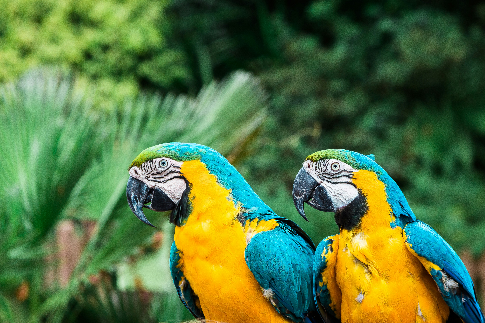

Depuis 1960, Arcadia est un joyau de la conservation de la faune, situé au cœur de la Bretagne, à proximité de la légendaire forêt de Brocéliande. Notre zoo est bien plus qu'une simple attraction ; c'est un sanctuaire où la nature prospère et où les animaux sont chéris et respectés.
Nous abritons une incroyable diversité d'animaux, soigneusement répartis selon leurs habitats naturels, qu'il s'agisse de la savane, de la jungle ou des marais. Chaque jour, notre équipe de vétérinaires dévoués effectue des contrôles rigoureux pour assurer le bien-être de nos pensionnaires avant l'ouverture du zoo. Chaque repas est minutieusement calculé, sous la supervision attentive de nos vétérinaires, garantissant ainsi une alimentation équilibrée et adaptée à chaque spécimen.
Le bien-être de nos animaux est au cœur de notre mission. Nous sommes fiers de notre engagement envers la santé et le bonheur de nos résidents. C'est grâce à cette attention constante que nos animaux rayonnent de vitalité et de bonheur.
Notre directeur, José, est le moteur de notre succès. Animé par une passion indéfectible pour la conservation et le respect de la nature, José a de grandes ambitions pour Arcadia. Sous sa direction éclairée, notre zoo prospère et continue d'inspirer des générations de visiteurs.

 
